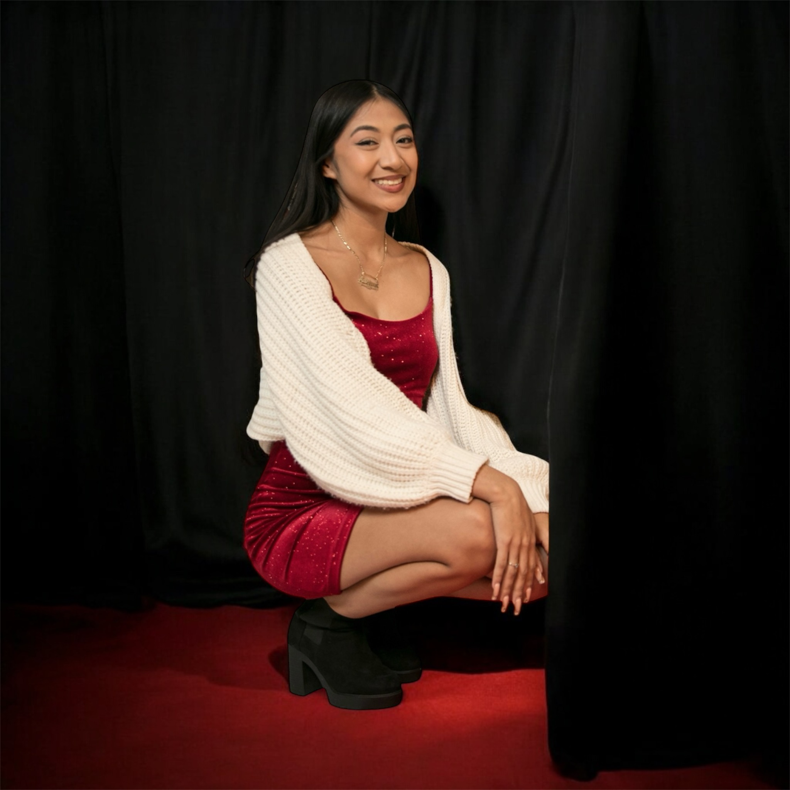

Adriana Reyes
I’m an enthusiastic research assistant, preparing to start my role in the winter quarter, where I’ll be supporting research in my field and gaining hands-on experience with data analysis, literature review, and collaborative project design. My studies have equipped me with a strong foundation in research methods, critical analysis, and clear communication, and I’m excited to apply these skills in a more practical, team-based setting.
In addition to my upcoming research role, I have substantial experience as a food server, a position that taught me the importance of patience, multitasking, and customer satisfaction. I am certified as a food server, which has not only made me more aware of food safety and service standards but also instilled in me a strong commitment to creating positive customer experiences.
Currently, I work as a retail associate at Uniqlo, where I continue to develop my skills in customer service, attention to detail, and time management. This role has deepened my understanding of consumer behavior, sales strategies, and the importance of building rapport with customers to ensure they have a welcoming and efficient shopping experience. Working in retail has strengthened my organizational skills and ability to adapt to changing demands.
Experience
Retail Associate
• Sales Associate
• Cahier
• Experience with Alterations and using industial sewing Machines
Research Assistant
• Help run research
• Do administrative projects
• Help with recruitment process
• Work together with fellow undergrads and graduate students
Education
University of CAlifornia-Riverside
Huntington Park HS
Portfolio

.JPG)
.PNG)